ARWell Pro: Designing Therapist-Led AR Therapy
A therapist-facing AR rehabilitation platform redesigned to make session setup clearer, patient management easier, and therapy engagement more clinically focused.
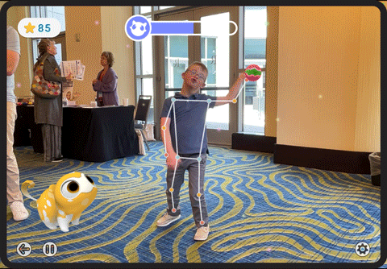
Company-measured post-launch
1. The Therapy System, at a Glance
Problem
ARWell Pro had promising AR gameplay, but the clinical workflow was fragmented. Therapists lacked clear session controls, children dropped off early, and rewards were interrupting therapy time.
The Pivot
Direct child feedback was not enough. Caregivers and teachers saw these children every day in ways researchers could not. Including them gave us behavioral context around focus, frustration, decision-making, and reward timing.
Key Insight
Therapy engagement breaks down when play, clinical intent, and therapist control stop working together.
The Stakes
This was not a consumer app where a bad experience meant someone closed a tab. A failed therapy session could mean 30–45 minutes of recovery time lost.
2. My Role
What I owned across strategy, research, design, and delivery
Discover
Product Strategy & Prioritization
Identified therapist workflow friction as the core product problem and translated research findings into priorities across session setup, patient management, game selection, and reward controls.
Research Planning & Synthesis
Independently planned and conducted live session observations, therapist interviews, caregiver and teacher interviews, and usability testing to uncover recurring workflow and engagement patterns.
Define
End-to-End Product Design
Independently owned the redesign of the therapist dashboard, session setup, patient and program management, game library, reward controls, and gameplay progression.
Agile Delivery & Risk Management
Managed delivery through sprint planning, tracked risks and dependencies, coordinated with clinical and technical stakeholders, and adjusted priorities as constraints emerged.
Deliver
Validation & Outcomes
Validated the redesigned workflows with therapists and children and connected product decisions to improved engagement, clearer therapist control, and better protection of therapy time.
3. Where We Started
ARWell Pro’s original landing screen created friction before therapy even began. Therapists opened the app to unclear weekly goal metrics, unlabeled navigation arrows, buried game selection, and no obvious first action.
Patient management, program setup, session type selection, and reward access were either missing or scattered across the experience. For therapists, setup took attention away from the child. For children, the interface created confusion before the exercise even started.
The issue was not just visual clutter — it was a clinical workflow problem.
Before
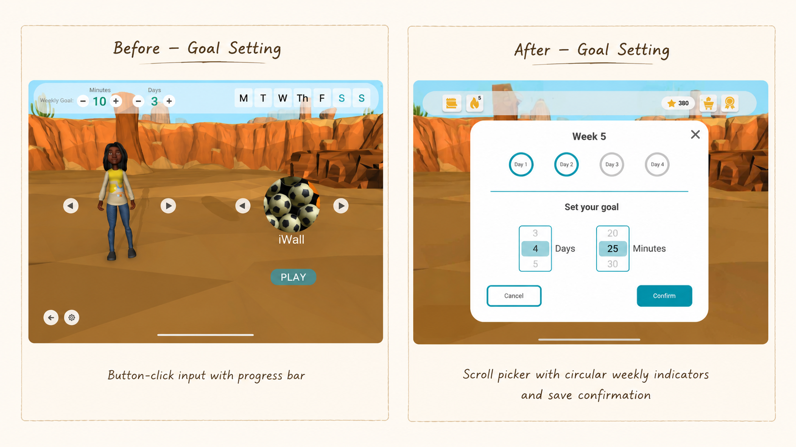
Before — What was broken
✕ Weekly goal controls did not clearly explain what was being tracked
✕ Three unlabeled navigation arrows
✕ Game selection buried inside the interface
✕ No session type selection
✕ Patient and program management scattered
✕ Reward store visible without therapist control
After
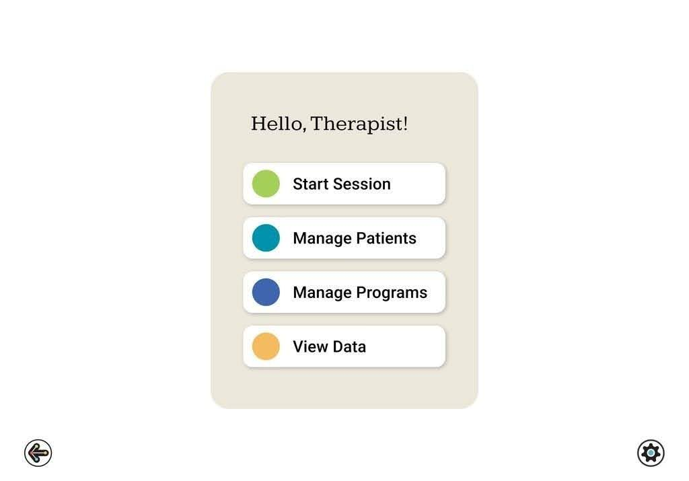
After — What I rebuilt
✓ Four-action therapist dashboard
✓ Start Session, Manage Patients, Manage Programs, and View Data
✓ Session setup for teletherapy and in-person care
✓ Patient and program management flows
✓ Category-based game library
✓ Therapist-controlled reward access
4. Research Approach
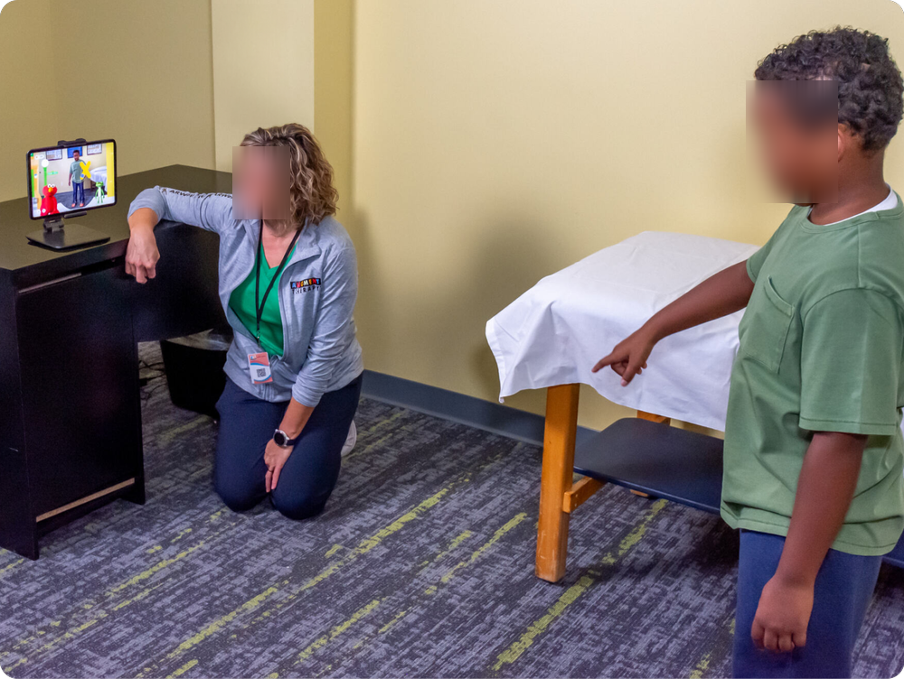
I mapped the full therapy workflow before redesigning the interface.
Before opening Figma, I needed to understand what was actually happening during a therapy session: how therapists prepared activities, how children responded to instructions, when attention started to drop, and when rewards helped or interrupted care.
I looked beyond individual screens and studied the full therapy ecosystem — therapist setup, child engagement, instruction clarity, gameplay progression, reward timing, and session control.
Research Questions
- Where does the therapist workflow break during live sessions?
- What causes children to disengage before completing therapy games?
- When do rewards support therapy, and when do they interrupt it?
- What controls do therapists need to keep sessions clinically useful?
Methods
• 30+ live therapy sessions observed across clinics and schools
• Therapist interviews conducted separately from live sessions
• Caregiver and teacher interviews added mid-project after a key research pivot
• Usability testing with therapists and children on redesigned flows
• Literature synthesis on pediatric motivation and reward timing
5. Key Findings
Three behaviors that changed the redesign.
Each finding came from observing what happened during real therapy sessions, not just from reviewing screens.
1. Therapists were navigating around the app, not through it.
What I observed: The original experience did not give therapists a clear path to start or manage a session. They had to interpret unclear goal metrics, click through games one by one, and work around scattered controls before therapy could begin. Game selection was especially slow. Therapists could not browse by therapy goal, save curated sets, or quickly choose the right activity for a patient.
Design response: I rebuilt the dashboard and game library around how therapists actually planned sessions. The new flow centered on four clear actions — Start Session, Manage Patients, Manage Programs, and View Data — and reorganized games by therapy goal, including Balance, Strength, Coordination, Endurance, and Sesame Street.
Programs also became reusable clinical objects, allowing therapists to save and assign curated game sets instead of rebuilding the session every time.
Clinical value: Reduced setup friction so therapists could spend less attention navigating the interface and more attention supporting the child.
Rebuilt Game Library — Organized by Therapy Goal
Before
Therapists had to click through games one at a time, making discovery slow during session setup.
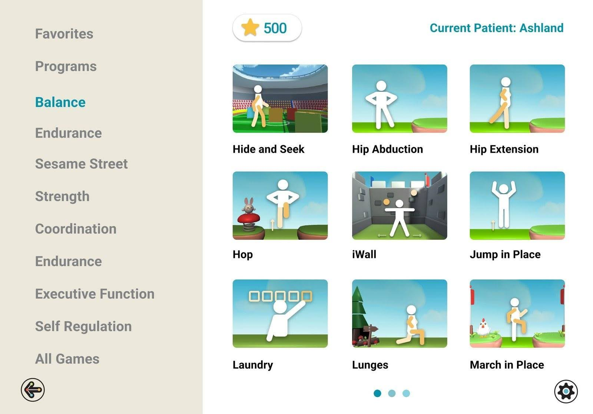
After
Games were organized by therapy goal, making activity selection faster and more clinically relevant.
2. Children quit games that gave them no reason to keep going.
What I observed: Across multiple games, levels changed visually but did not always build in a way children could understand. Themes, objects, and difficulty shifts often felt disconnected, so children had little reason to believe the next level would feel different or worth reaching.
Design response: I redesigned progression logic so levels built through clearer themes, movement behavior, and challenge patterns. Punch Ball became one example of this shift: instead of unrelated objects across levels, the redesigned version used a space theme where difficulty increased through object size, speed, motion, and timing.
Clinical value: Reduced setup friction so therapists could spend less attention navigating the interface and more attention supporting the child.
From Random Levels to Purposeful Progression
Before
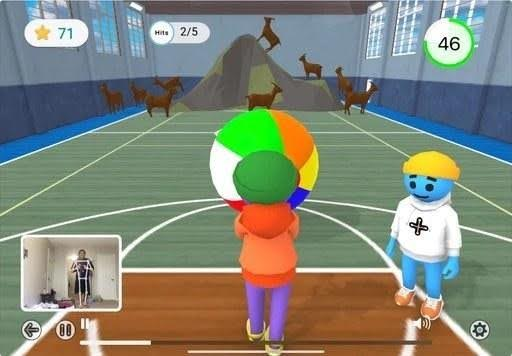
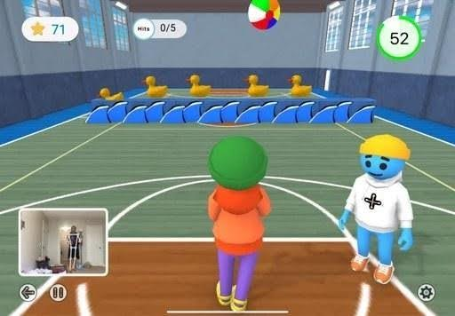
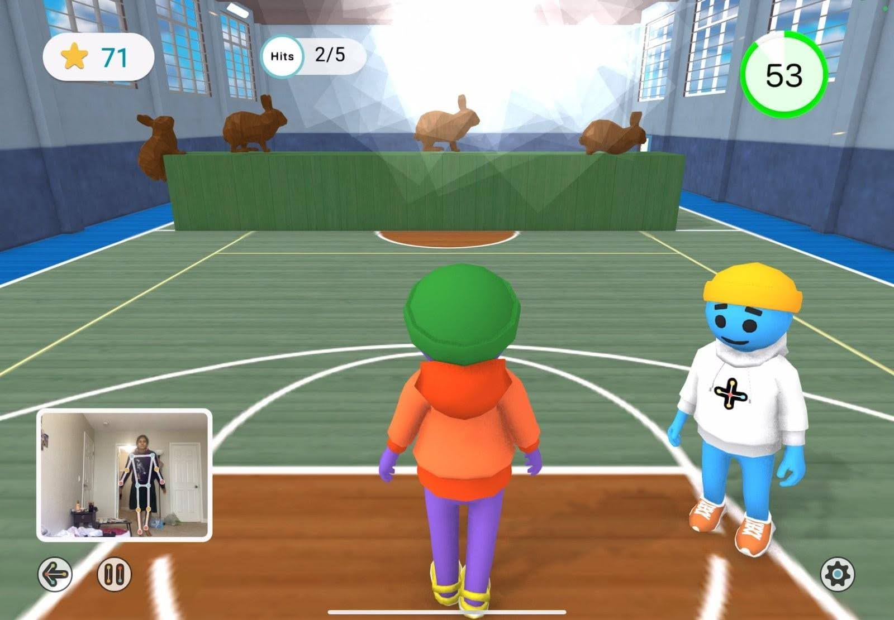
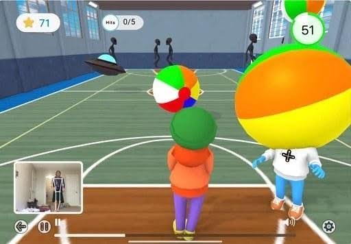
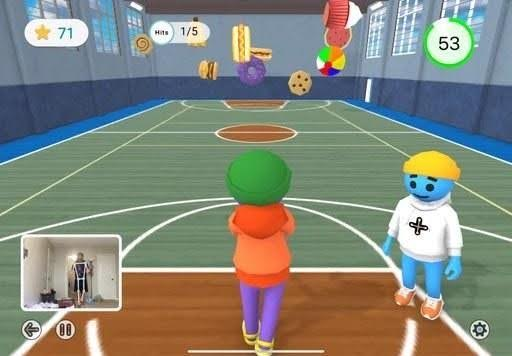
Random unrelated themes (levels had no connection to each other)
After
Games were organized by therapy goal, making activity selection faster and more clinically relevant.
3. The reward store was interrupting therapy time.
What I observed: Children often went straight to the reward store before starting exercises. In a 30–45 minute therapy session, open-ended browsing could take over valuable session time. What was meant to motivate therapy was sometimes replacing therapy.
Design response: I added therapist-controlled reward access so the store could be turned on or off per patient. I also added a 2-minute reward timer, giving children enough time to choose a reward without letting the store take over the session.
Clinical value: Protected therapy time while still keeping rewards available as a motivation tool.
Patient Access Controls — Therapist Toggles Reward Store per Patient
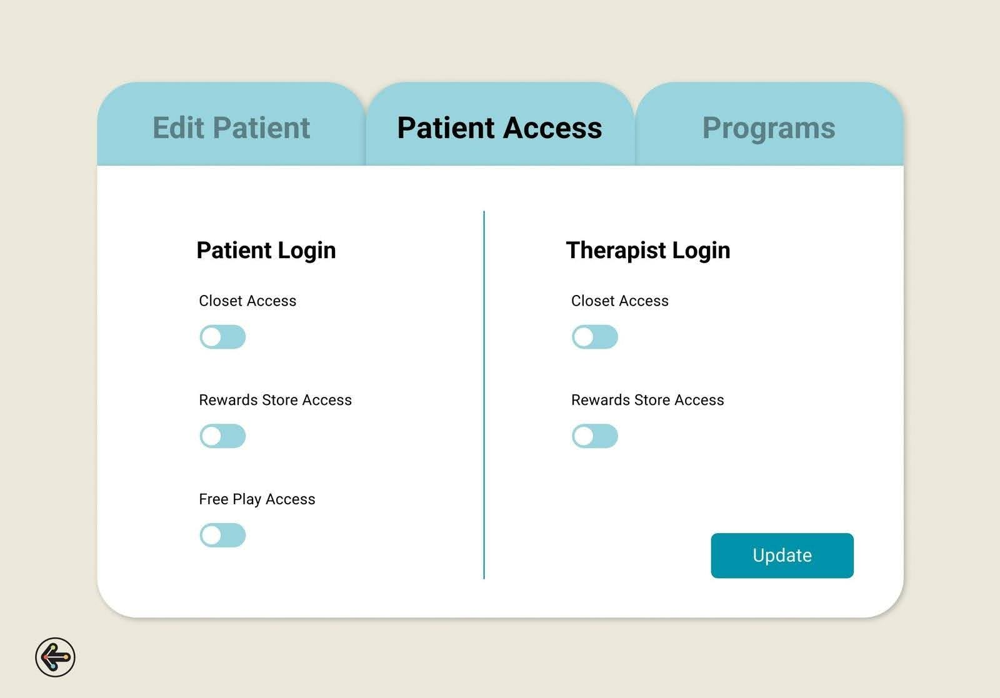
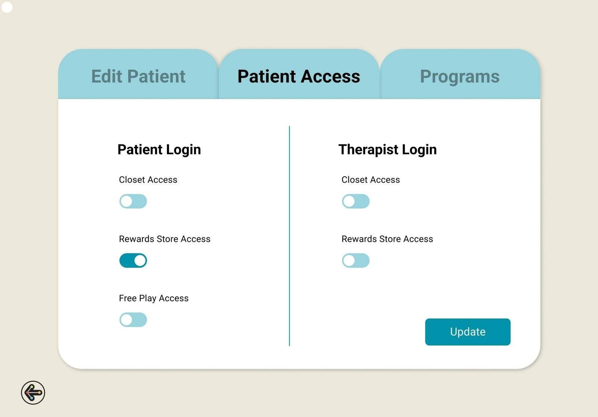
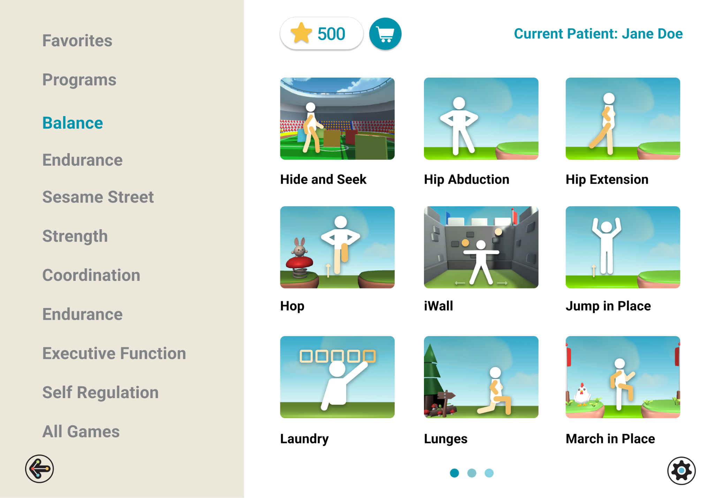
6. Design Principles
What this project taught me about designing for clinical contexts.
Children respond to play, but therapy requires repeatable, goal-oriented engagement. Rewards and games work best when they are tied to effort, progress, and timing — not novelty alone.
Every extra step in a clinical interface takes attention away from the child. Common actions should be fast, visible, and easy to control during a live session.
Every object, motion pattern, and level should support a therapeutic purpose. If the game is fun but does not support movement practice, it can work against the session.
The most important insight came from people outside the primary user group. Caregivers and teachers helped reveal patterns children could not always explain during therapy.
7. Reflection
What I would do differently.
This project gave me deep, repeated exposure to one therapy environment, but I would not treat those findings as universal without broader validation.
The same workflow issues surfaced across many sessions, which made the redesign direction clear. But before scaling, I would want to test the dashboard, programs, reward controls, and game progression with therapists from outpatient clinics, hospital-based programs, and independent practices.
ARWell Pro taught me that designing for healthcare is not about making clinical tools more playful on the surface. It is about understanding the coordination between therapist, child, task, motivation, and outcome — and designing a system where those pieces work together.
In therapy design, engagement is only valuable when it protects the clinical goal — not when it pulls attention away from it.
8. Next Steps
What I would explore next.